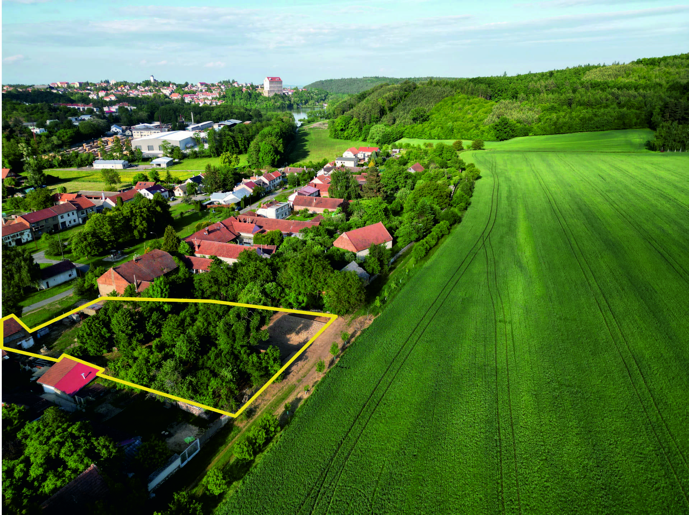
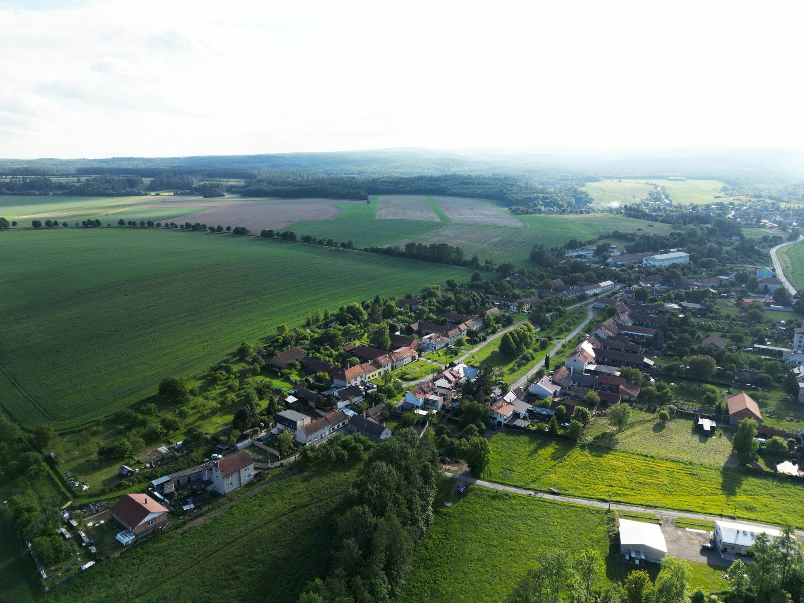
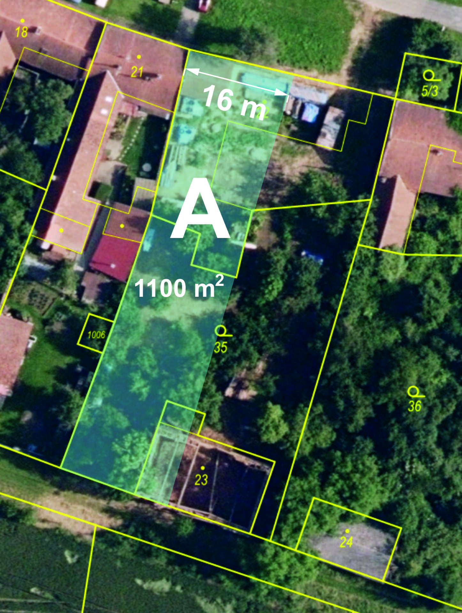
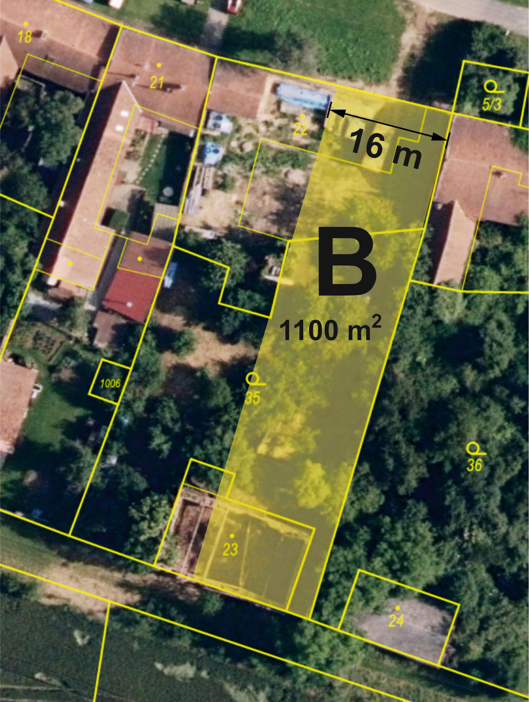
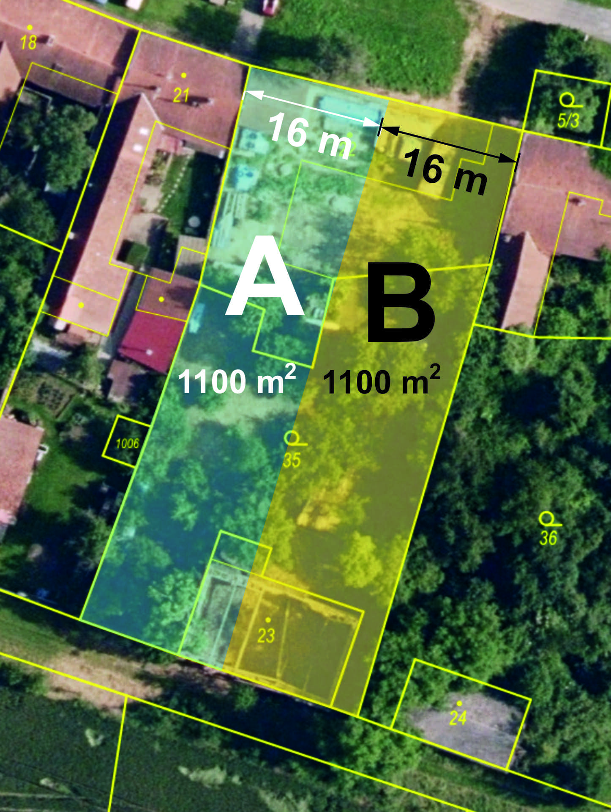
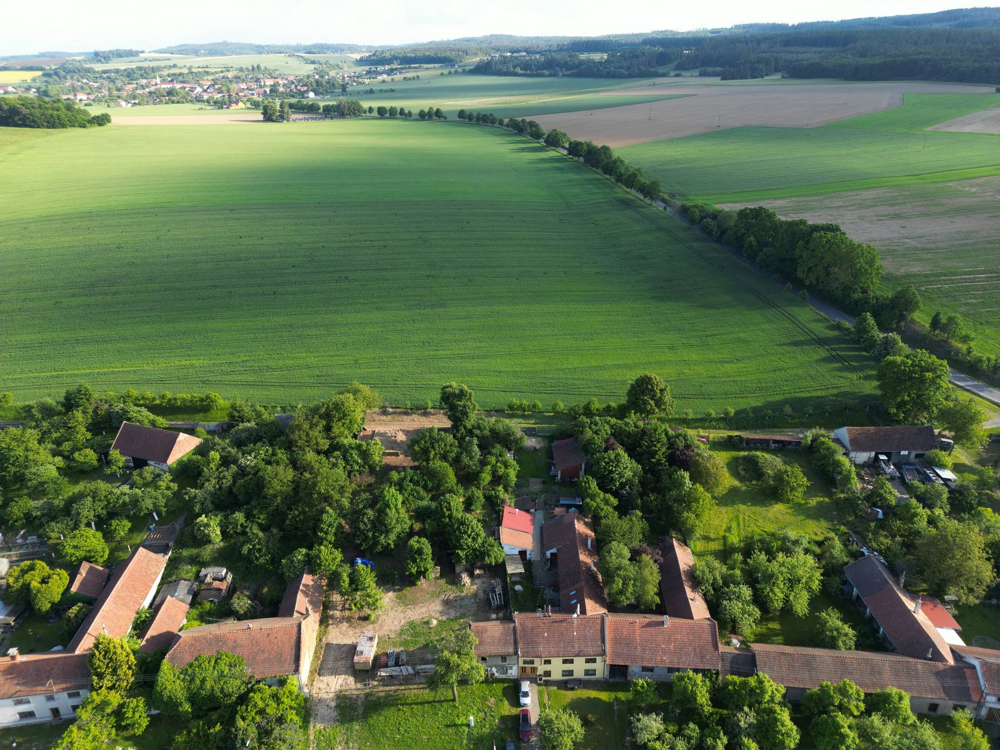
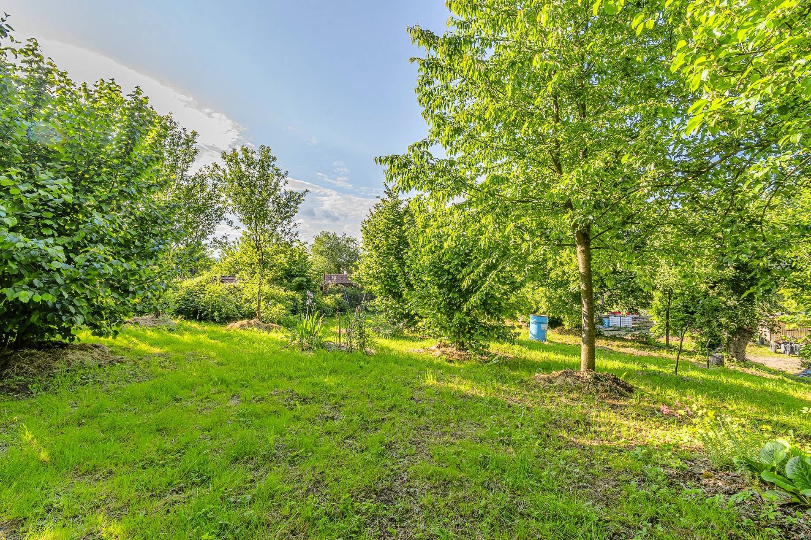
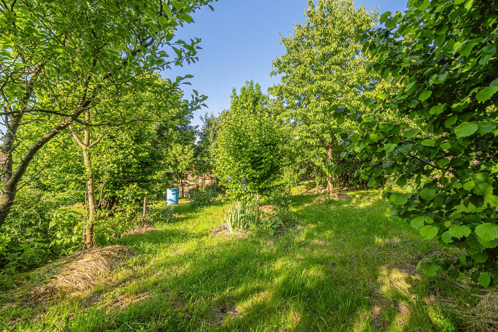
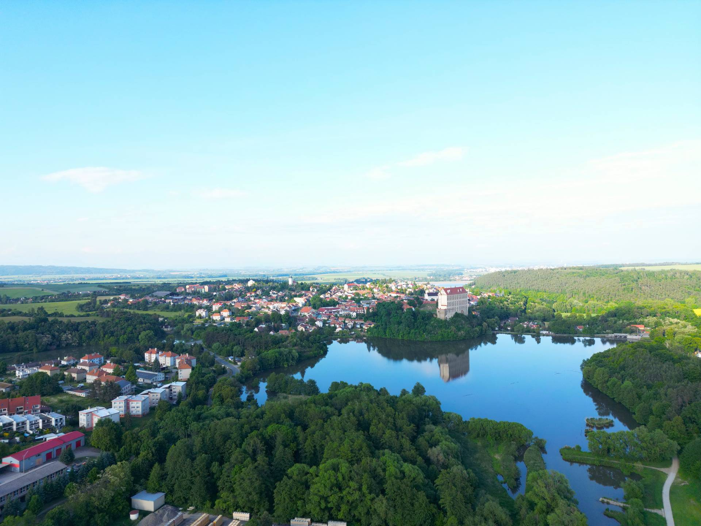
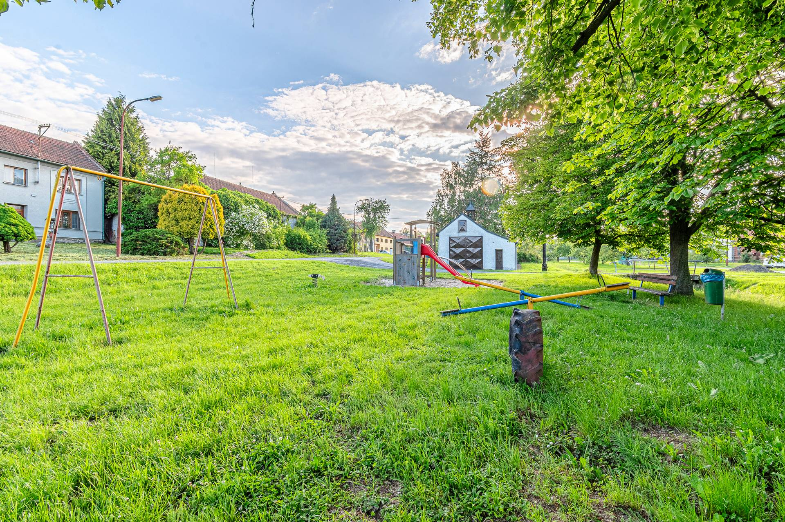

Soběsuky u Plumlova

Jsou místa, která nesou v sobě generace. Toto je jedno z nich.
Pozemek na klidné návsi v Soběsukách u Plumlova má historii sahající do dob, kdy zde stával velký hanácký grunt. Ten genius loci — atmosféru místa, které bylo po desetiletí domovem a centrem venkovského života — nelze koupit ani naplánovat. Buď ho místo má, nebo nemá.
Kouzelná zahrada se vzrostlými stromy, keři a vzrostlou zelení ušetří novým majitelům deset let čekání. Vinný sklípek a klenutý kamenný sklípek jsou vzácností, které si při výstavbě nových domů již těžko můžete dovolit — a zde na vás čekají hotové.
Pozemek je vhodný pro stavbu rodinného domu pro ty, kdo touží po klidu přírody — ale nechtějí se vzdát pohodlné dostupnosti služeb, škol a zaměstnání v Prostějově.

Pozemek je prodáván kompletně vyklizený. A veškerý starý materiál (trámy, dřevo, cihly, kameny, maringotka) budou odvezeny, pokud si nový majitel nebude přát jinak.
Pozemek lze zakoupit jako dvě samostatné parcely, nebo jako celek za výhodnou cenu. Přesné rozdělení proběhne po dohodě se zájemcem formou geometrického plánu.



Soběsuky jsou součástí města Plumlov — přesto mají charakter klidné vesnice na návsi. Poloha na rozhraní Hané a Drahanské vrchoviny nabízí krásnou krajinu s lesem, rybníky a přehradou.





Rádi vám pozemek ukážeme osobně, zodpovíme veškeré dotazy a domluvíme podmínky prohlídky. Neváhejte nás kontaktovat — odpovídáme zpravidla do 24 hodin.